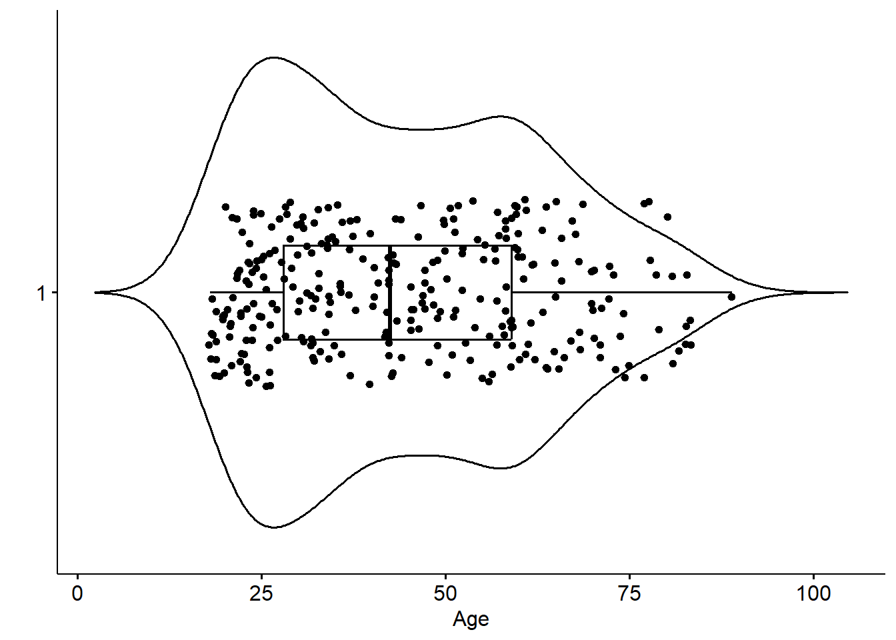

# Load libraries
library(tidyverse)
library(sjPlot)
library(ggpubr)
load(here::here("data/depression_clean.Rdata")) # your import line will look something like thisHW 04: Describing Distributions
Let the data be beautiful
Purpose
There are a variety of conventional ways to visualize data - tables, histograms, bar graphs, etc. The purpose is always to examine the distribution of variables related to your research question. You will create a plot, follow up each graphic with a table of summary statistics (for quantitative variables) or frequency and proportion table (for categorical), and then a summary paragraph that brings it all together.
Instructions
Completely describe 2 categorical and 2 quantitative variables using all of the following:
- An explanation of what the variable is, and how it is measured.
- A table of summary statistics,
- An appropriate plot with titles and axes labels (include both a histogram and boxplot for numeric data)
- A short paragraph description in full complete English sentences.
To guide your description of this distribution try to include the following information:
- What is the trend in the data? What exactly does the chart show? (Use the chart title to help you answer this question)
- Describe the location of the bulk of the data. Measures include
- Measures of center: mean/median
- IQR as Q3 and Q1 (i.e., 50% of the data lie between \(x_{1}\) and \(x_{2}\))
- N and (%) for categorical data for the largest category.
- Describe the shape (for quantitative measures only):
- Symmetry/Skewness - Is it symmetric, skewed right, or skewed left?
- Modality - Is it uniform, unimodal, or bimodal?
- Describe the spread or variability in the data
- Appropriate measures include range, standard deviation, IQR for continuous data
- For categorical data describe if distribution is spread across multiple response categories or mainly only one.
- Describe the outliers (note: there may not be any for every graph). Continuous data only.
- Are there any outliers for the variable?
- If yes, are these true outliers or false (due to data management or input error) outliers? (This could alert you to missing codes like -77 or 99 that need to be set to missing)
Submission instructions
- Use the template provided: [QMD]
- Right click and ‘save as’, put this in your
scriptsfolder
- Right click and ‘save as’, put this in your
- Upload your draft PDF to Canvas by the due date.
Example
text written like this are example student submission text
Basic categorical
Draft style plot, direct computer output showing/copied. Poor grammar and/or sentence structure, no attempt at explaining what the variable means, extra unnecessary or incorrect information included. Typos.
table(clean$depressed)
depressed not depressed
45 249 There are 249 not depressed and 45 depressed.
Proficient categorical
Cleaned up plot, full English sentences, useful text formatting of variable names and levels. Explained what the variable was named and what it measured.
The
depressedvariable is an indicator variable created from the CESD scale to identify potential clinical depression. This variable has two levels:depressedornot depressed.
plot_frq(clean$depressed)
The majority of respondents in this data set are not considered depressed; 84.7% (n=249) individuals did not meet the threshold on the CESD scale to indicate potential clinical depression.
Basic quantitative
A “for your eyes only” quality plot, minimal description of characteristics, no information about the variable provided.
hist(clean$age)
summary(clean$age) Min. 1st Qu. Median Mean 3rd Qu. Max.
18.00 28.00 42.50 44.41 59.00 89.00 sd(clean$age)[1] 18.08544age is skewed right with a mean of 44 and median of 42 and a sd of 18.
Proficient quantitative
Overlaid a density curve on the histogram, added a dashed line at the mean. Table of summary statistics present in a nicely formatted way, digits rounded appropriately. Plot cleaned up with appropriate axis and titles.
ggviolin(clean$age, add = c("jitter", "boxplot")) +
coord_flip() + labs(x="", y="Age")
gghistogram(clean$age, add_density = TRUE) + xlab("Age")

The ages of respondents range from 18 to 89 years old, is bimodal with peaks around 25 and 55ish. The mean age is 44.4 with the median very close at 42.5 - confirming the lack of skew. The standard deviation is 18, and 50% of the reported ages lie between 28 and 59.